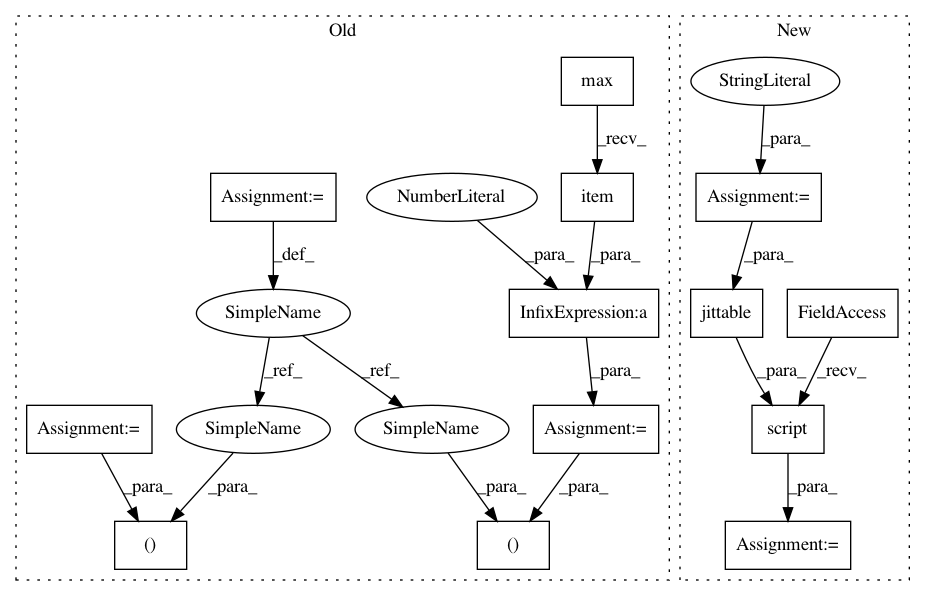

0ac8fd7f84e53235eeb17287b25d1c191f1e4614,test/nn/conv/test_edge_conv.py,,test_edge_conv_conv,#,6
Before Change
def test_edge_conv_conv():
in_channels, out_channels = (16, 32)
edge_index = torch.tensor([[0, 0, 0, 1, 2, 3], [1, 2, 3, 0, 0, 0]])
num_nodes = edge_index.max().item() + 1
x = torch.randn((num_nodes, in_channels))
nn = Seq(Lin(2 * in_channels, 32), ReLU(), Lin(32, out_channels))
conv = EdgeConv(nn)
After Change
torch.jit.script(conv.jittable())
t = "(Tensor, Tensor) -> Tensor"
jit = torch.jit.script(conv.jittable(t))
assert jit(x, edge_index).tolist() == out.tolist()
t = "(PairTensor, Tensor) -> Tensor"
jit = torch.jit.script(conv.jittable(t))
In pattern: SUPERPATTERN
Frequency: 4
Non-data size: 13
Instances
Project Name: rusty1s/pytorch_geometric
Commit Name: 0ac8fd7f84e53235eeb17287b25d1c191f1e4614
Time: 2020-06-14
Author: matthias.fey@tu-dortmund.de
File Name: test/nn/conv/test_edge_conv.py
Class Name:
Method Name: test_edge_conv_conv
Project Name: rusty1s/pytorch_geometric
Commit Name: 0ac8fd7f84e53235eeb17287b25d1c191f1e4614
Time: 2020-06-14
Author: matthias.fey@tu-dortmund.de
File Name: test/nn/conv/test_edge_conv.py
Class Name:
Method Name: test_edge_conv_conv
Project Name: rusty1s/pytorch_geometric
Commit Name: 7b4892781e2198ad99a8655da03133505619040a
Time: 2020-06-28
Author: matthias.fey@tu-dortmund.de
File Name: test/nn/conv/test_arma_conv.py
Class Name:
Method Name: test_arma_conv
Project Name: rusty1s/pytorch_geometric
Commit Name: 18f7a20f9098da9bd848e31b501b6b1c571accc1
Time: 2020-06-27
Author: matthias.fey@tu-dortmund.de
File Name: test/nn/conv/test_appnp.py
Class Name:
Method Name: test_appnp
Project Name: rusty1s/pytorch_geometric
Commit Name: 529eca01188546cef7ac4b245bebd2171a62a807
Time: 2020-06-16
Author: matthias.fey@tu-dortmund.de
File Name: test/nn/conv/test_gated_graph_conv.py
Class Name:
Method Name: test_gated_graph_conv